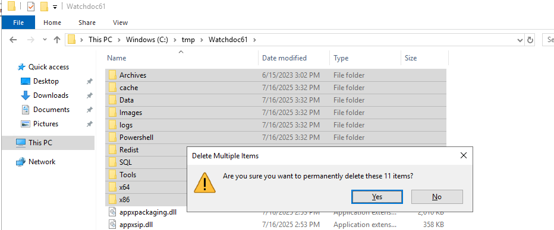
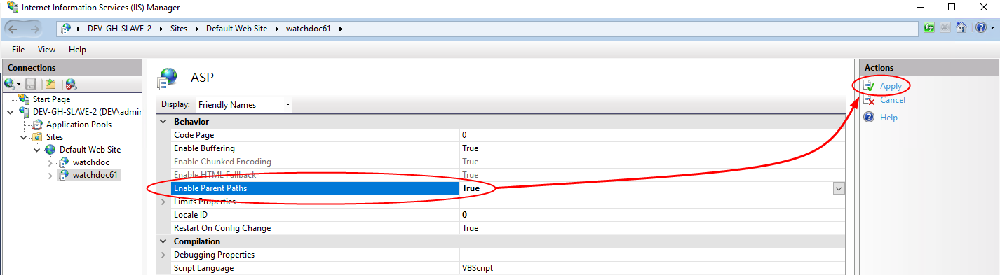
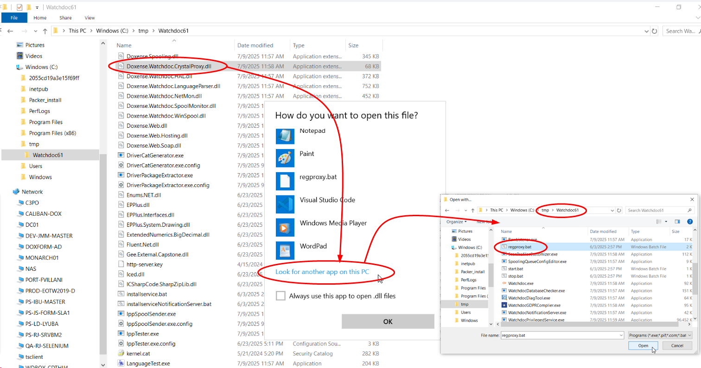

Watchdoc 6.1.1 - Sauvegarder la précédente version du site web de Watchdoc (.net Remoting)
Principe
Cette procédure vise à sauvegarder la précédente version du site web de Watchdoc de manière à ce qu'elle reste opérationnelle durant la mise à jour. Il est possible de continuer à administrer les serveurs qui n'ont pas été mis à jour par via l'ancien site web.
Copier les dossiers Watchdoc
-
En tant qu'administrateur, rendez-vous sur le serveur qui héberge Watchdoc ;
-
rendez-vous dans le dossier d'installation de Watchdoc (ex C:\Program Files\Doxense\Watchdoc par défaut) ;
-
copiez ce dossier et collez-le dans un autre dossier temporaire ("C:\tmp\Watchdoc61", par exemple). Ce dossier doit rester intact durant la mise à jour de l'intégralité des serveurs. Vous pourrez le supprimer une fois la mise à jour validée ;
-
dans le dossier temporaire qui vient d'être collé, supprimez tous les sous-dossiers pour ne garder que les fichiers .dll et .bat :

-
rendez-vous dans le dossier wwwroot de Watchdoc ("C:\inetpub\wwwroot\watchdoc" par défaut) ;
-
copiez/collez le dossier Watchdoc et renommez la copie "Watchdoc61" afin de conserver la version 6.1 du site web durant le temps de la mise à jour :

-
lancez l'outil Internet Information Services (IIS) Manager pour vérifier que le dossier Watchdoc61 est bien considéré comme un dossier et non une application :

Si ce n'est pas le cas, recommencez l'étape 6 pour copier/coller le dossier.
-
Dans Internet Information Services (IIS) Manager cliquez-droit sur le dossier Watchdoc61, puis sélectionnez l'action Convert to application :
-
dans l'interface Add Application, complétez les paramètres :
-
Application pool: sélectionnez WatchdocPool ;
-
Physical path: saisissez le chemin d'accès au dossier Watchdoc61 : C:\inetpub\wwwroot\watchdoc61 par défaut ;
-
-
cliquez sur OK pour valider l'ajout de l'application :

-
Dans Internet Information Services (IIS) Manager, cliquez sur l'icone ASP ;
-
dans la section Behavior > pour le paramètre Enable Parent Path, saisissez la valeur True :
-
cliquez ensuite sur Apply pour valider le paramètre :

-
Quittez Internet Information Services (IIS) Manager.
Modifier le chemin de Doxense.Watchdoc.CrystalProxy.dll dans la base de registre
-
Revenez dans l'explorateur et ouvrez le dossier C:\tmp\Watchdoc61 ;
-
vérifiez que ce dossier contient a minima la dll Doxense.Watchdoc.CrystalProxy.dll et l’utilitaire regproxy.bat ;
-
ouvrez la dll Doxense.Watchdoc.CrystalProxy.dll à l'aide de regproxy.bat

è Cette opération modifie la base de registre. Désormais, pour instancier la classe Doxense.Watchdoc.Proxy61, la dll est recherchée dans le dossier temporaire spécifique qui a été créé.